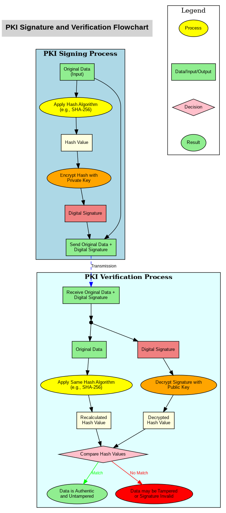

This flowchart illustrates the complete process of PKI (Public Key Infrastructure) signature creation and verification, showing both the signing process and the verification process with clear visual separation and appropriate symbols.

Process Summary
PKI Signing Process:
Input Data: Original data that needs to be signed
Hashing: Apply a hash algorithm to the data, producing a hash value
Private Key Usage: Use the signer's private key to encrypt the hash value, generating a digital signature
Output: Send the original data and the digital signature to the recipient
PKI Verification Process:
Input Data: Receive the original data and the digital signature
Hashing: Apply the same hash algorithm to the received data, producing a hash value
Public Key Usage: Use the signer's public key to decrypt the digital signature, retrieving the hash value
Comparison: Compare the decrypted hash value with the recalculated hash value
If they match, the data is authentic and untampered
If they do not match, the data may have been tampered with or the signature is invalid